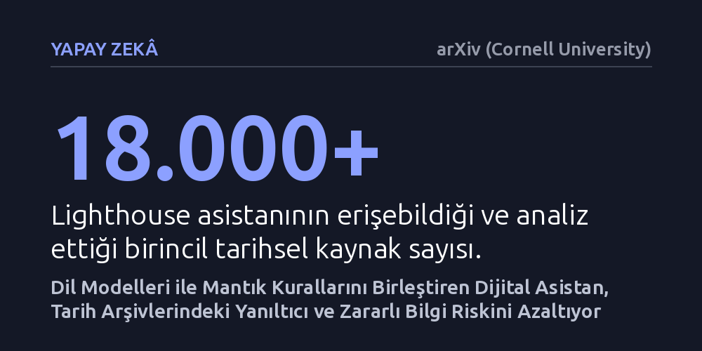

YAPAY-ZEKA · arXiv (Cornell University) · 2026-10-25
Araştırmacılar, tarihsel arşivleri araştırırken dil modellerinin uydurma veya zararlı bilgi üretme riskini kural tabanlı mantıkla engelleyen Lighthouse adlı bir dijital asistan geliştirdi. Sistem, Güney Karolina'daki sivil haklar dönemine ait 18 binden fazla birincil kaynağı güvenilir biçimde analiz ederek uzman standartlarına uygun yanıtlar sundu.
Yapay zekânın hassas tarihsel konularda sadece akıcı metin üretmekle kalmayıp, mantık kuralları denetimiyle güvenilir ve zararsız bilgi sunan bir araştırma yardımcısına dönüştürülebileceğini gösterir.

Büyük dil modelleri karmaşık belgeleri hızla özetleme ve soruları anında yanıtlama konusunda yetenekli olsalar da, tarih gibi kesinliğin ve bağlamın hayati önem taşıdığı alanlarda ciddi sorunlar barındırır. Modelin gerçekte var olmayan olayları uydurması veya hassas toplumsal konularda önyargılı ve yanıltıcı içerikler üretmesi, tarih araştırmacıları ve genel okur için büyük bir bilgi kirliliği riski doğurur. Özellikle ırkçılık, ayrımcılık ve sivil hak mücadeleleri gibi sancılı geçmişe sahip dönemlerde yanlış bilgilendirme toplumsal hafızayı doğrudan zedeleyebilir.
Bu araştırmanın arkasındaki temel itici güç, yapay zekânın tarih alanında yalnızca akıcı bir sohbet robotu olarak değil, güvenilirliği kanıtlanmış bir karar destek aracı olarak nasıl konumlandırılabileceği sorusudur. Araştırmacılar, dijital bir asistanın kullanıcılara tarihsel gerçekleri sunarken hem doğrulanabilir kaynaklara dayanmasını hem de potansiyel zararlı içerik riskini sıfıra indirmesini sağlayacak bir mimari inşa etmeyi hedeflemiştir.
Araştırma ekibi, Lighthouse adını verdikleri dijital asistanı geliştirirken geleneksel dil modellerinin serbest metin üretme yaklaşımını tek başına kullanmaktan kaçınmıştır. Bunun yerine, derin öğrenmenin doğal dil anlama gücüyle kural tabanlı sembolik mantık çözücülerini birleştiren nöro-sembolik bir yaklaşım benimsemişlerdir. Bu sistemde yapay zekâ bir yandan dil modelinin geniş kapsamlı yanıt üretme kabiliyetinden yararlanırken, diğer yandan sembolik mantık kuralları sayesinde yanıtların risk derecesini denetlemekte ve hatalı çıkarımları filtrelemektedir.
Sistemin bilgi tabanı, ABD'nin Güney Karolina eyaletindeki Sivil Haklar Hareketi dönemine odaklanan zengin bir arşive bağlanmıştır. Lighthouse; metin belgeleri, fotoğraflar ve ses kayıtlarını içeren çok modlu 18.000'den fazla birincil kaynağa doğrudan erişim sağlayacak biçimde yapılandırılmıştır. Modelin başarısını ölçmek amacıyla iki aşamalı bir değerlendirme kurgulanmış; sistem tek bir kesin cevabı olan olgusal soruların yanı sıra, bağımsız uzmanların yanıtları birleştirilerek oluşturulan altın standart bir soru-cevap veri seti üzerinden öznel sorularla da sınanmıştır.
Yapılan değerlendirmeler, nöro-sembolik yaklaşımın tarihsel verileri taramada ve yanıt üretmede bilgi güvenilirliği ile kapsayıcılık arasında başarılı bir denge kurduğunu ortaya koymuştur. Sistem, tek bir somut yanıtı bulunan olgusal soruları birincil arşiv belgelerine dayandırarak başarıyla yanıtlamış, standart dil modellerinde sıkça görülen hayal ürünü veya uydurma iddiaların önüne sembolik filtreler sayesinde geçilmiştir.
Tarihsel olayların yorumlanmasını gerektiren öznel sorularda ise Lighthouse'un bağımsız tarih uzmanlarının uzlaştığı referans çerçeveye son derece yakın sonuçlar verdiği gözlenmiştir. Model, kullanıcılara yanıt aktarırken potansiyel zarar veya çarpıtma riskini minimuma indirmeyi başarmış; çok modlu veriler arasından doğru tarihsel bağlamı seçip sunma konusunda tutarlı bir performans sergilemiştir.
Bu çalışmanın ortaya koyduğu model, yapay zekânın arşivcilik ve tarih araştırmalarındaki rolüne dair önemli bir bakış açısı sunmaktadır. Dil modellerinin serbest bırakıldığında oluşturduğu bilgi güvenliği riskleri, mantıksal denetim mekanizmalarıyla dizginlenebilmektedir. Bu durum, yalnızca sivil haklar tarihi için değil; tıptan hukuka, kültürel mirastan eğitime kadar doğruluğun kritik olduğu pek çok alanda dijital asistanların güvenle kullanılabileceğini işaret etmektedir.
Yine de çalışmanın önbaskı aşamasında olduğu ve henüz belirli bir eyaletin arşiviyle sınırlı kaldığı unutulmamalıdır. Sistem mimarisinin kolayca genişletilebilir yapıda olması, ilerleyen dönemlerde farklı tarihsel dönem ve coğrafyalara ait koleksiyonların da bu güvenilirlik süzgecinden geçirilerek araştırmacıların ve meraklı okurların kullanımına açılabileceğini göstermektedir.